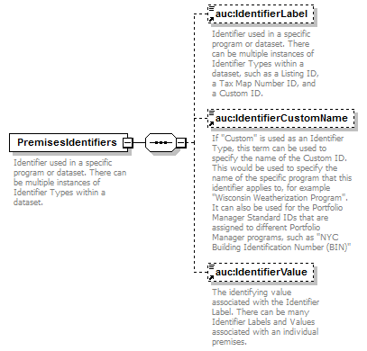

| diagram |  | ||
| namespace | http://nrel.gov/schemas/bedes-auc/2014 | ||
| properties |
|
||
| children | auc:IdentifierLabel auc:IdentifierCustomName auc:IdentifierValue | ||
| used by |
|
||
| annotation |
|
||
| source | <xs:element name="PremisesIdentifiers"> <xs:annotation> <xs:documentation>Identifier used in a specific program or dataset. There can be multiple instances of Identifier Types within a dataset.</xs:documentation> </xs:annotation> <xs:complexType> <xs:sequence> <xs:element ref="auc:IdentifierLabel" minOccurs="0"> <xs:annotation> <xs:documentation>Identifier used in a specific program or dataset. There can be multiple instances of Identifier Types within a dataset, such as a Listing ID, a Tax Map Number ID, and a Custom ID.</xs:documentation> </xs:annotation> </xs:element> <xs:element ref="auc:IdentifierCustomName" minOccurs="0"/> <xs:element ref="auc:IdentifierValue" minOccurs="0"> <xs:annotation> <xs:documentation>The identifying value associated with the Identifier Label. There can be many Identifier Labels and Values associated with an individual premises.</xs:documentation> </xs:annotation> </xs:element> </xs:sequence> </xs:complexType> </xs:element> |